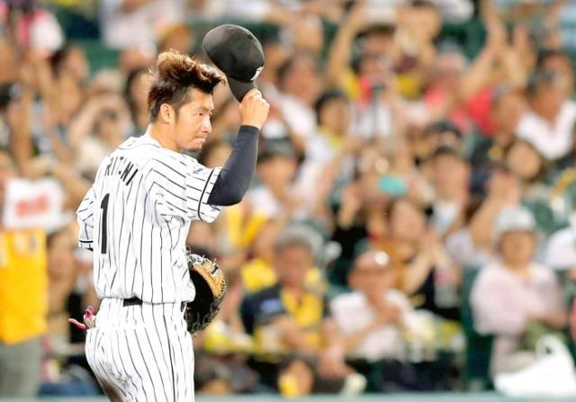
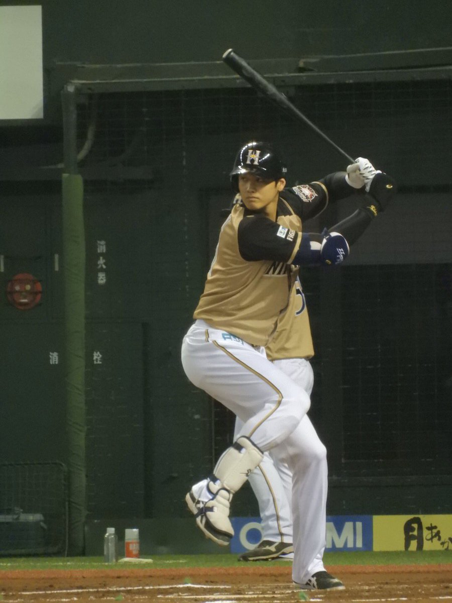
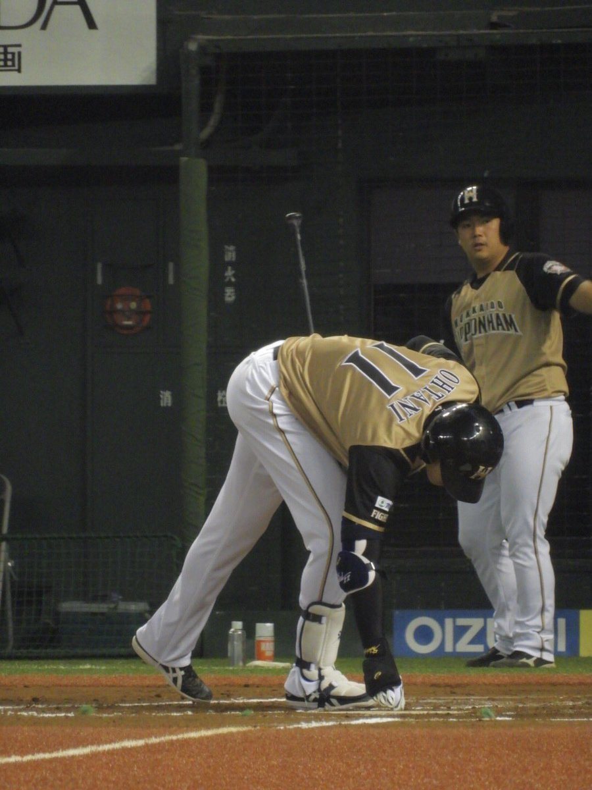
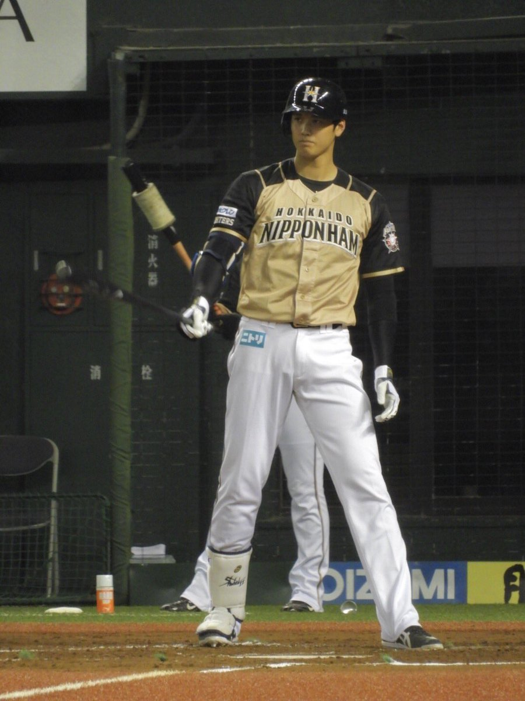
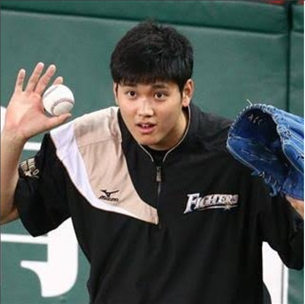

-

阪神ニュース
試合は同点の７回に勝ち越して３位・ＤｅＮＡを下し、鳥谷の偉業に花を添えた。試合後のヒーローインタビューで鳥谷は「本当にたくさんのファンの前で２０００本目が打ててよかったと思います」と本拠地で決められたことを喜んだ。反撃となる一打だったが「負けている場面だったので、点が入ってよかったと思います」と振り返り、金字塔を達成したことで「これで周りが静かになると思うので、ここから楽に野球が出来ると思います」と満員のファンを笑わせた。 鳥谷は０３年に自由獲得枠で阪神に入団し、入団２年目の０５年にレギュラーに遊撃のレギュラーに定着。同年のリーグ制覇にも貢献した。ベストナイン６度、ゴールデン・グラブ賞を４度獲得。今季から三塁にポジションを移し、プロ野球歴代２位の連続出場は、この日で１８７７試合を数えた。 通算２０００安打は今季、中日・荒木、巨人・阿部も達成。日米通算ではメッツ・青木も達成している。 また甲子園球場は過去、巨人・王貞治とヤクルト・若松勉が通算２０００安打を達成。この日の鳥谷を含めて、３選手とも「背番号１」だった。
みど
おおたにくん
  
#大谷翔平ぴっち

🌼CSプロ野球NEWS🌼
大谷くん2本のホームラン💡
完璧すぎるよ
😆大谷くんはohtanilove0705

geydereval4Follow @juliancamarena 😊 -
ログイン